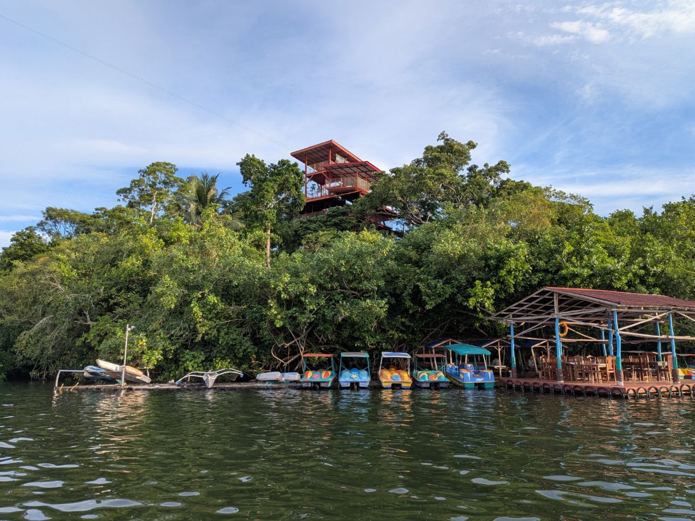
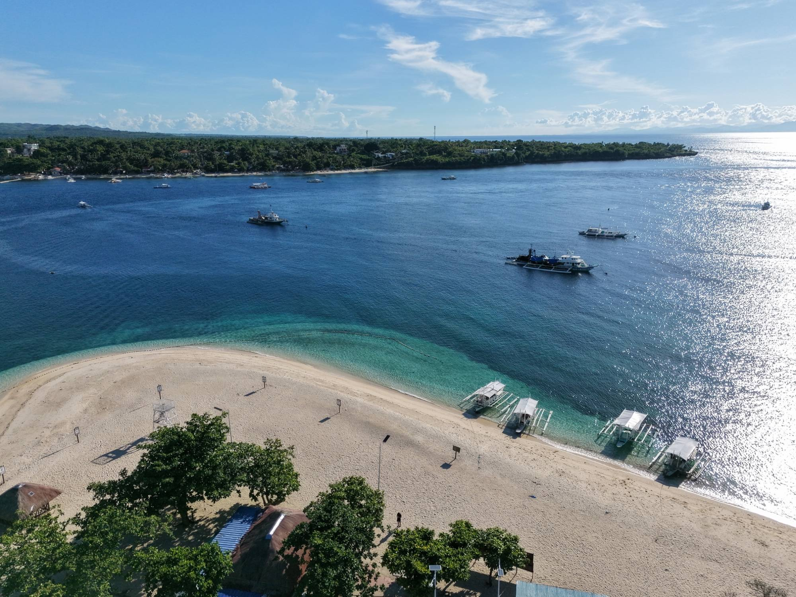
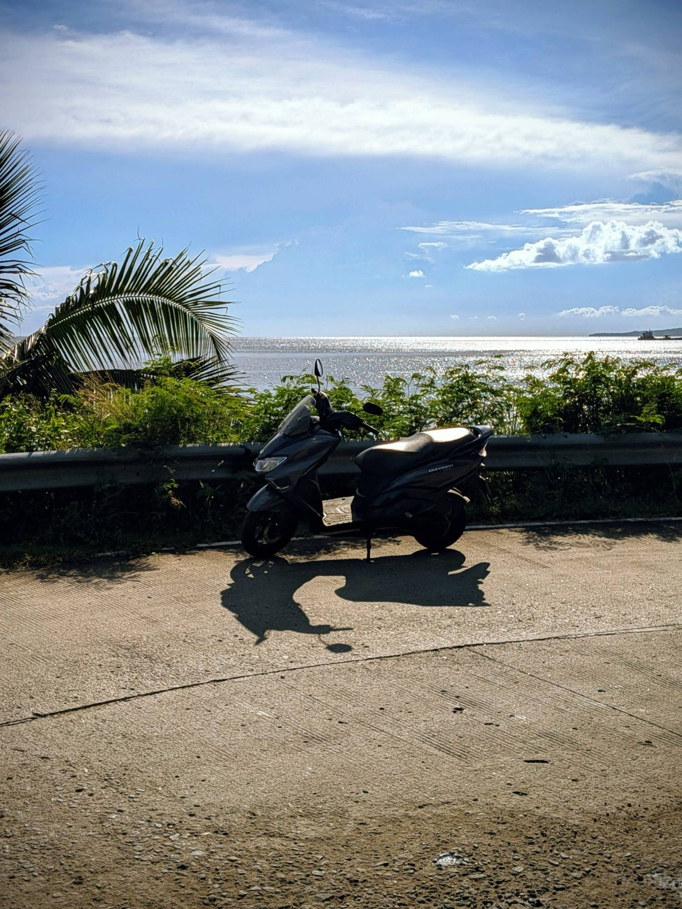

Lake Danao
A freshwater lake on Pacijan, with kayaks and paddle boats.

The island's coast from above
Explore Camotes
The Camotes Islands sit east of mainland Cebu: four islands, quiet roads, caves, a lake and clear water. Close enough to reach in an afternoon, far enough to feel away.
Getting here
Times and fares change, so check the current schedule with the ferry operator before you travel.
Things to do

A freshwater lake on Pacijan, with kayaks and paddle boats.

Glide across the lake on the zip line, the water wide and still below you.

The island's best-known beach, for swimming and snorkelling.

Coconut palms, soft sand and calm water. Come late in the day for the light.

Clear, shallow water over seagrass, where you might share the view with a sea turtle.

Lagoon swimming in a clear pool set into the rocks, shaded by trees.

Rent a motorbike at the village and follow the coast road, the sea beside you most of the way.

On Poro, where light falls through the ceiling into the water. Best around midday.

Steps down to a cold, clear spring pool.

Guided tours
We can arrange island tours with trusted local guides.
Caves, the lake and the beaches, with a local guide who knows the way.
How to book a tour
Tell us when you're thinking of coming.